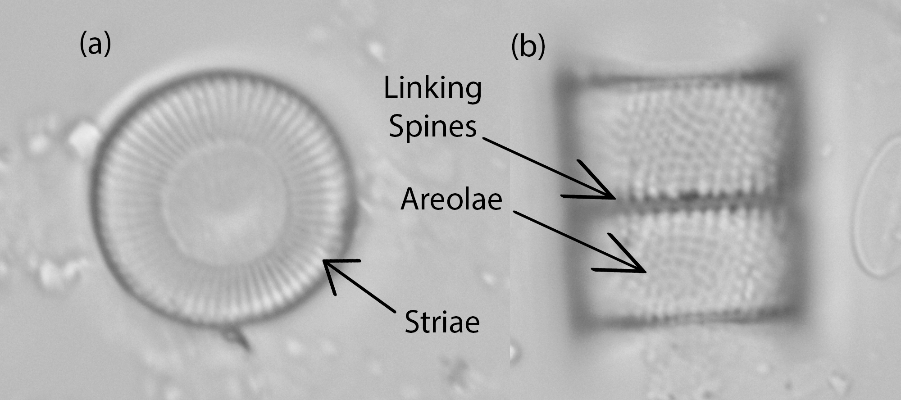

Diatoms are characterized by their unique silica cell walls called frustules which are made up of two overlapping halves called thecae. Each theca consists of a valve held together by a fragile band (girdle). Nearly all diatoms have fine pores (areolae) on the cell walls – these simple perforations can appear as continuous lines (striae), forming distinct pattern for each species (Battarbee et al., 2001). Based on the shape of the frustules (Figure 2.2; Figure 2.3), there are two main groups of diatoms: centric diatoms – characterized by radial symmetry, and pennate diatoms – characterized by bilateral symmetry (Almqvist et al., 2001). Most pennate diatoms possess an elongated slit, or a pair of fissures in the valve called the raphe. Its type (e.g. naviculoid or canal), presence or absence help further categorize pennate diatoms into smaller groups (Battarbee et al., 2001). Since the silica walls do not undergo decomposition, they are well preserved in the sediment. The shape, size and ornamentation of the valves are crucial for an exact identification down to species level (Battarbee et al., 2001; Jalba et al., 2005).

Figure 3. Important features of pennate diatom frustules: The striae (consisting of rows of areolae) and the raphe. The more common naviculoid raphe runs along the central axis of the valve, while the canal raphe runs along the margin of the valve. Pictured: (a) Navicula cuspidata, (b) Nitzschia amphibia.
Figure 4. Important features of centric diatom frustules: The striae, the areolae and the linking spines. Pictured: (a) Cyclotella distinguenda, (b) Aulacoisera ambigua.